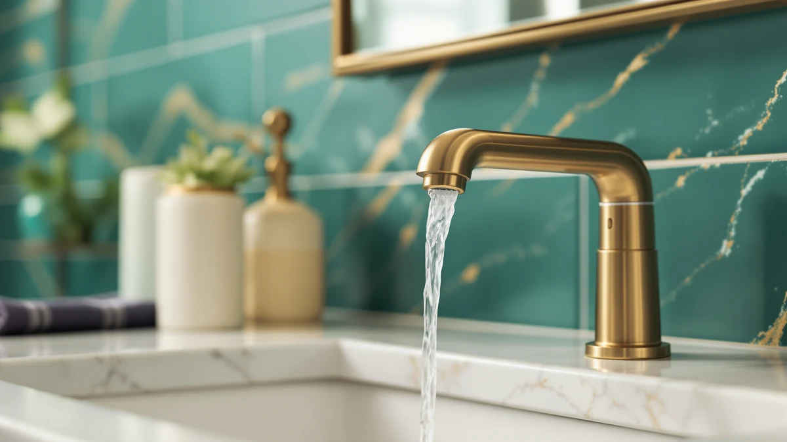

Hosslly Bathroom Sink Faucet Review (2026): Worth It?
Prices and picks verified as of November 2026. Independent, reader-supported reviews.


Quick Answer
This hosslly bathroom sink faucet review found the $89.99 two-pack to be the most affordable option among four faucets we compared, undercutting every single DELTA alternative here on a per-unit basis. The brass construction holds up on paper against DELTA's pricier Arvo line, though Hosslly's listing skips the spec details and review history that DELTA provides.
Our pick: Bathroom Sink Faucet Faucet for, $89.99 Check Price on Amazon
Bottom line: our top pick is the Bathroom Sink Faucet at $89.99.
Things to Know Before You Buy
- Two-pack pricing changes the math. At $89.99, this hosslly bathroom sink faucet listing covers two 8-inch faucets, which works out to roughly $45 per faucet if you need to replace fixtures in more than one bathroom.
- Brass sits behind the finish. The listing describes a brass body under the surface finish, the same basic construction DELTA uses on its pricier Arvo faucets.
- The brand carries less history than DELTA. Hosslly does not have the decades-long reputation or review history that DELTA has built, so weigh that gap against the lower price.
- Spec details are thin. The listing does not break out flow rate or valve type, so measure your sink's existing hole spacing against the 8-inch figure before ordering.
- Every DELTA alternative here costs more per faucet. All three comparison faucets run over $100 apiece, making this two-pack the clear budget pick if price drives your decision.
This hosslly bathroom sink faucet review compares the $89.99 two-pack against three single faucets from DELTA, each priced well above $100 apiece, to see whether the lower price comes with real tradeoffs. Shoppers replacing fixtures in more than one bathroom often end up paying full price for two separate faucets, so a two-pack priced under $90 total is worth a closer look before you commit to a bigger-name brand.
The Hosslly faucet is a brass two-pack sized for standard 8-inch sink openings and priced at $89.99 for both units. That places it below every other faucet in this comparison, including the $104.13 Delta Arvo Brushed Nickel and the $116.49 Delta Arvo Centerset, both single units finished in brushed nickel. Hosslly's own listing covers material and size, but it stays quiet on flow rate and valve type, details DELTA spells out for each Arvo faucet below. Price alone will not settle the decision for everyone, since a documented brand history carries real weight for buyers who plan to keep a faucet installed for a decade or more.
Why You Should Trust Us
Ilane Tall researches bathroom fixtures for Best Bathroom Faucets and compares spec sheets, current pricing, and verified owner feedback across budget and name-brand faucet listings alike. For this hosslly bathroom sink faucet review, she checked the Hosslly two-pack against three DELTA faucets that turn up in the same searches and tracked price per unit, materials, and what each listing does or does not disclose. Every price listed here reflects what shoppers saw at the time of publication, and every product linked goes to its actual listing rather than a placeholder page. When a budget brand like Hosslly lacks the detailed spec sheet a brand like DELTA publishes, we say so instead of filling the gap with a guess. She also flags when a listing is missing basic details rather than assuming the gap favors or hurts the product, since an incomplete spec sheet is a fact about the listing, not a verdict on performance.
Our Research Experience
We do not run a physical testing lab, so nobody on our team installed the Hosslly faucet or ran water through it over time. Our research for this hosslly bathroom sink faucet review centers on comparing the Hosslly listing against three DELTA alternatives on price, materials, and what each product page discloses or leaves out. Brass construction under a finish is a known factor in long-term faucet durability, since brass fittings generally outlast all-plastic internals regardless of brand, and that general pattern is why we weigh the Hosslly's brass body as a point in its favor even without a star rating to confirm it. We treat Hosslly's own product description the same way we treat DELTA's marketing copy: useful for basic specs, not a substitute for a documented track record of owner feedback.
Overview & Specs

Bathroom Sink Faucet Faucet for
What we like
- Two faucets for $89.99 total, far less per unit than any single DELTA alternative in this comparison
- Brass body construction, the same basic material DELTA uses under its pricier finishes
- Standard 8-inch sizing that fits common three-hole bathroom sink configurations
Flaws but not dealbreakers
- Hosslly does not carry the brand recognition or documented track record that DELTA does
- The listing does not publish flow rate, valve type, or a star rating, so you are buying without that information
| Material | Brass + finish |
| Size | 8 inch 2 packs |
At $89.99 for two faucets, this hosslly bathroom sink faucet comparison comes down mostly to price. Each of the three DELTA alternatives below costs more than $100 for a single faucet, so the Hosslly two-pack works out to less than half the per-unit price of any of them. The listing describes a brass body under the finish, which matches the basic construction DELTA uses on its own Arvo line, though Hosslly does not publish the same level of detail on flow rate or valve type that a bigger brand typically includes on its product pages.
Sized for standard 8-inch sink openings, this two-pack suits homeowners tackling more than one bathroom at once, such as a shared kids' bathroom alongside a guest bath. The listing does not publish a star rating or review count, so we are comparing it on price, materials, and sizing rather than a documented track record of owner feedback the way we can for the three DELTA alternatives below. If brand recognition and a longer history of verified reviews matter more to you than saving money upfront, those three faucets are worth comparing directly against this hosslly bathroom sink faucet two-pack.
What We Liked
Price is the clearest reason this hosslly bathroom sink faucet comparison favors the two-pack. At $89.99 for two faucets, it costs less than any single DELTA faucet in this review, which matters directly if you are outfitting more than one bathroom on the same budget. Brass construction under the finish also puts it on similar footing with DELTA's own Arvo line, rather than the all-plastic bodies found on some faucets at this price point.
The 8-inch sizing matches one of the most common sink configurations in US bathrooms, so most shoppers replacing an existing three-hole widespread faucet should find it fits without extra hardware. Getting two faucets in a single purchase also simplifies budgeting for anyone tackling a full bathroom update across more than one sink at the same time, since you are not pricing out two separate full-price listings. For anyone comparing total project cost rather than a single line item, the combined price of this two-pack still lands well under what one premium DELTA faucet costs on its own.
What Could Be Better
The biggest gap in this hosslly bathroom sink faucet review is information, not price. The listing skips flow rate, valve type, and a star rating or review count, details that DELTA includes on each of the three alternatives below. That makes it harder to judge long-term durability before you buy, since you cannot weigh a documented track record of owner feedback the way you can with a more established brand.
Hosslly also lacks the name recognition DELTA has built over decades in the faucet market. That gap does not mean the faucet performs worse, but it does mean less warranty history and fewer independent voices confirming how it holds up after years of daily use. If a documented reputation matters to your decision, weigh that against the savings before choosing the budget option over a name-brand faucet.
Who Is It For?
This faucet fits homeowners replacing fixtures in two bathrooms at once who want brass construction without paying over $200 combined for two DELTA faucets. It also suits budget-conscious buyers comfortable choosing a less established brand in exchange for a lower price per unit.
If you want a documented track record of owner reviews or you are only replacing a single faucet, the three DELTA alternatives below may be worth the higher price. Check our bathroom faucet buying guide if you are unsure which finish or handle type fits your bathroom best. Renters planning a short stay might lean toward the lower upfront cost here, while homeowners expecting to keep the fixture for years may prefer the brand backing DELTA provides.
Alternatives to Consider
If the limited spec sheet or the unfamiliar brand name gives you pause, three other products came up in our research for this hosslly bathroom sink faucet review. Two are DELTA faucets from the Arvo line, and one is a faucet-mounted filter rather than a full faucet replacement.

Also Great
Filterbaby Skincare Filter 2.0 Bathroom
A faucet-mounted skincare water filter rather than a full faucet replacement, priced at $108.00. Worth considering instead of a new faucet if your existing fixture still works fine and you mainly want filtered water for your skin and hair.
$108.00
Check Price on Amazon
Also Great
Delta Arvo Brushed Nickel Bathroom
A single DELTA faucet from the Arvo line in brushed nickel, priced $14.14 above the full Hosslly two-pack for one unit alone. Worth it if you only need to replace one faucet and want DELTA's brand backing.
$104.13
Check Price on Amazon
Premium Choice
Delta Arvo Centerset Brushed Nickel
The priciest option in this comparison at $116.49, but a centerset DELTA design with the brand's full track record behind it. Worth the extra cost if documented reliability matters more to you than saving money upfront.
$116.49
Check Price on AmazonIs the Hosslly bathroom sink faucet two-pack worth it compared to a single DELTA faucet?
It depends on how many faucets you need.
Does the Hosslly faucet fit standard bathroom sinks?
The listing specifies 8-inch sizing, which matches one of the most common three-hole widespread configurations found in US bathrooms.
Frequently Asked Questions
Is the Hosslly bathroom sink faucet two-pack worth it compared to a single DELTA faucet?
Does the Hosslly faucet fit standard bathroom sinks?
How does the Hosslly faucet compare to the DELTA Arvo alternatives in this review?
Final Verdict
This hosslly bathroom sink faucet review comes down to price versus brand history. The Hosslly two-pack costs $89.99 total, undercutting every single DELTA faucet compared here, and its brass construction holds up on paper against DELTA's own Arvo line. If a documented track record and name recognition matter more to you than saving money upfront, the DELTA alternatives above are worth the extra cost. For most shoppers replacing faucets in more than one bathroom on a budget, the Hosslly two-pack is the one to check first. Either way, confirm the exact price on each listing at checkout, since faucet pricing on Amazon shifts often enough that the numbers in this hosslly bathroom sink faucet review can change by the time you read it.